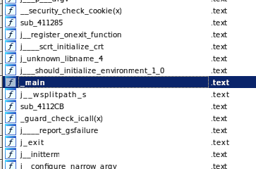
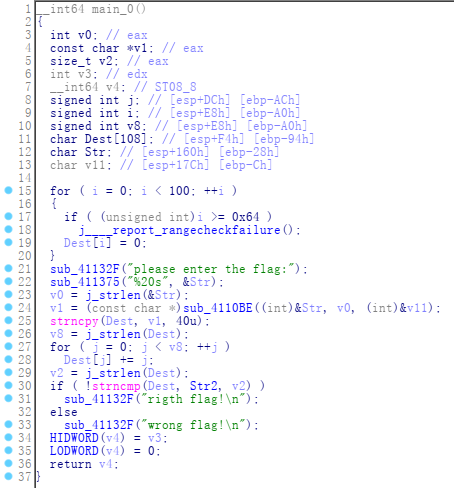
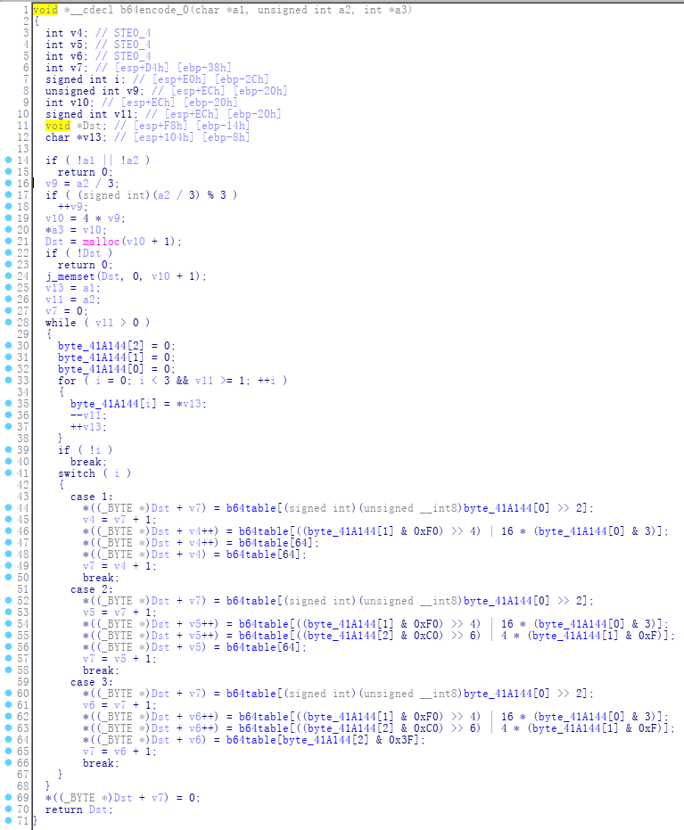
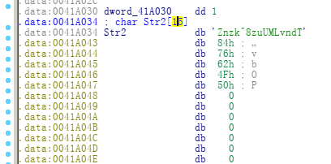

蒙古马2020 Wirteups:reverse-rev
题目：rev
程序下载:rev
hint:yyyymmdd
0x00 暴力破解压缩包
根据提示yyyymmdd可知解压密码为8位年份，暴力破解得到解压密码
20200601
0x01 程序分析
解压程序看一下：
rev.exe: PE32 executable (console) Intel 80386, for MS Windows
我的环境是ubuntu，wine运行发现少两个dll文件，导入运行
wine rev.exe
please enter the flag:xxx #输入xxx
wrong flag!
IDA分析
看到_main跳转到_main_0，直接跟进F5看伪代码


查看关键function

显然是base64加密，再将加密结果strcpy到Dest上，再经过一道加密算法把Dest的每一byte加j，再与Str2比对。
看一下Str2的值：

注意： 这里’\x84’不能被解析所以Str2的长度应为20。
Str2 = 'Znzk^8zuUMLvndT\x84vBOP'
0x02 python脚本
import base64
enc = 'Znzk^8zuUMLvndT\x84vBOP'
tmp = ''
for i in range(len(enc)):
tmp+=''.join(chr(ord(enc[i])-i))
flag = base64.b64decode(tmp)
print flag
$ ./exp.py
flag{g00dman